Las capturas son de la aplicación real, tomadas sobre un panel de ejemplo con personas ficticias. Las pantallas son las mismas que en producción; cambian los códigos, los segmentos y las cifras.
Qué resuelve, qué datos guarda y cuáles no, y qué puede hacer cada rol.
COLOQUIO es el sistema de investigación cualitativa de Equipos Consultores: entrevistas en profundidad y focus groups. En esta primera fase permite correr un grupo presencial entero desde el sistema. Se define el estudio y su pauta, se eligen los candidatos del panel y se los convoca. Si alguien se cae, se lo reemplaza sin romper la composición del grupo. El día de la sesión se recibe a la gente, y al final queda registrado el regalo de cada participante.
Hasta ahora ese trabajo se hacía con una agenda y WhatsApp, y dejaba tres problemas. No se podía medir cuánta gente venía. Nada impedía sentar por tercera vez en el año a la misma persona. Y el volumen de cualitativo quedaba limitado por las horas de coordinación. COLOQUIO registra cada paso para que esos números existan, y bloquea al panelista repetido cuando se arma el grupo.
COLOQUIO trabaja sobre el mismo panel que Gestión de paneles,
pero no guarda ningún dato personal: ni nombre, ni documento, ni
teléfono, ni email, ni dirección, ni fecha de nacimiento. A cada persona la
identifica un código opaco, el id_persona, y su
segmento: sexo, tramo etario y localidad.
| La bóveda | Es la base de datos de personas de paneles. COLOQUIO la
consulta para saber quién se puede convocar (solo aparece
quien dio su consentimiento de contacto) y para leer un teléfono o un email
en el momento de usarlo. Cada lectura de un contacto queda
registrada a nombre de quien la pidió. |
| COLOQUIO | Guarda estudios, pautas, sesiones, el embudo de cada convocatoria, asistencias, incentivos y el historial cualitativo de cada persona. Todo por código, sin datos personales. |
En COLOQUIO vas a ver códigos, no nombres. El teléfono se muestra cuando lo pedís para llamar y no queda guardado: no lo copies a una planilla ni a una nota. Y en los campos de texto libre, como las notas de la sesión o los motivos, no se pueden escribir teléfonos, emails ni documentos. El sistema los rechaza.
Los usuarios son los mismos de Gestión de paneles. Cada uno puede tener uno o más de estos roles:
| Rol | Qué hace |
|---|---|
| Coordinador de campo | Arma sesiones, selecciona, convoca, reemplaza, recibe a la gente, cierra la sesión y entrega los regalos. |
| Investigador | Crea estudios y pautas, arma sesiones, selecciona candidatos, consulta historiales e importa sesiones históricas. |
| Administrador | Todo lo anterior, y además los catálogos, los umbrales, los roles de los usuarios y las tareas de cumplimiento. |
Quien es admin en Gestión de paneles es administrador de COLOQUIO automáticamente. Así siempre hay alguien que pueda asignar los primeros roles.
Se entra con el mismo usuario de Gestión de paneles.
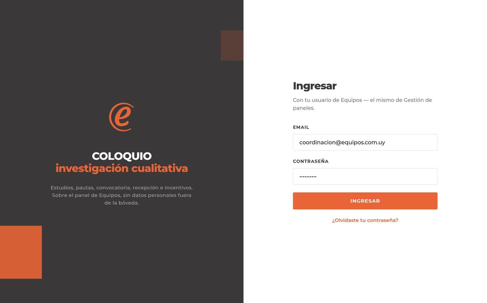
| Mensaje | Qué significa |
|---|---|
| No estás habilitado en el padrón de Equipos | Tu usuario no existe o está desactivado en Gestión de paneles. Pedile el alta a un administrador de paneles. |
| No tenés roles en COLOQUIO | Estás en el padrón pero nadie te asignó un rol acá. Pedíselo a un administrador de COLOQUIO (sección 12.7). |
Es la primera pantalla. Muestra las sesiones de los próximos siete días, las que están en convocatoria y, cuando haya sesiones cerradas, la tasa de show y su tendencia (sección 11). A la izquierda está el menú: Tablero, Estudios, Sesiones y Configuración. Cuando entrás a una sesión aparecen debajo sus cinco pantallas: Armado, Selección, Embudo, Recepción e Incentivos.
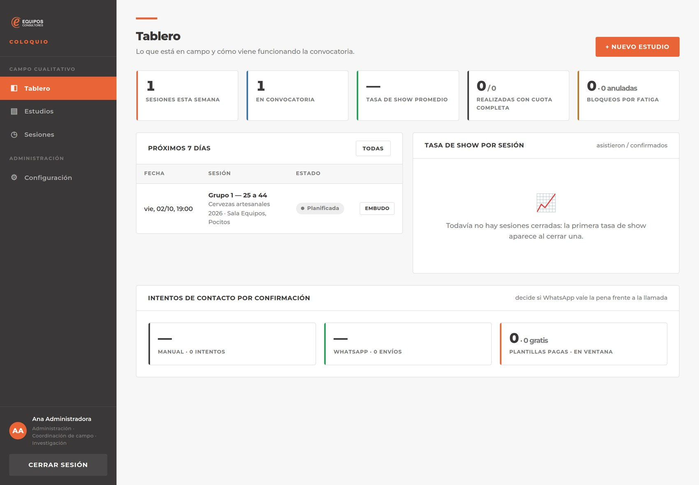
El estudio agrupa las sesiones. La pauta es el instrumento con el que se conducen.
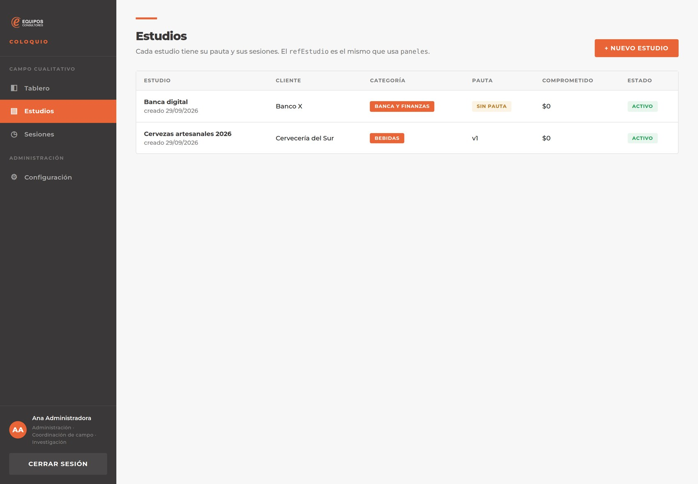
refEstudio de esa encuesta. Si lo dejás vacío, el sistema genera uno.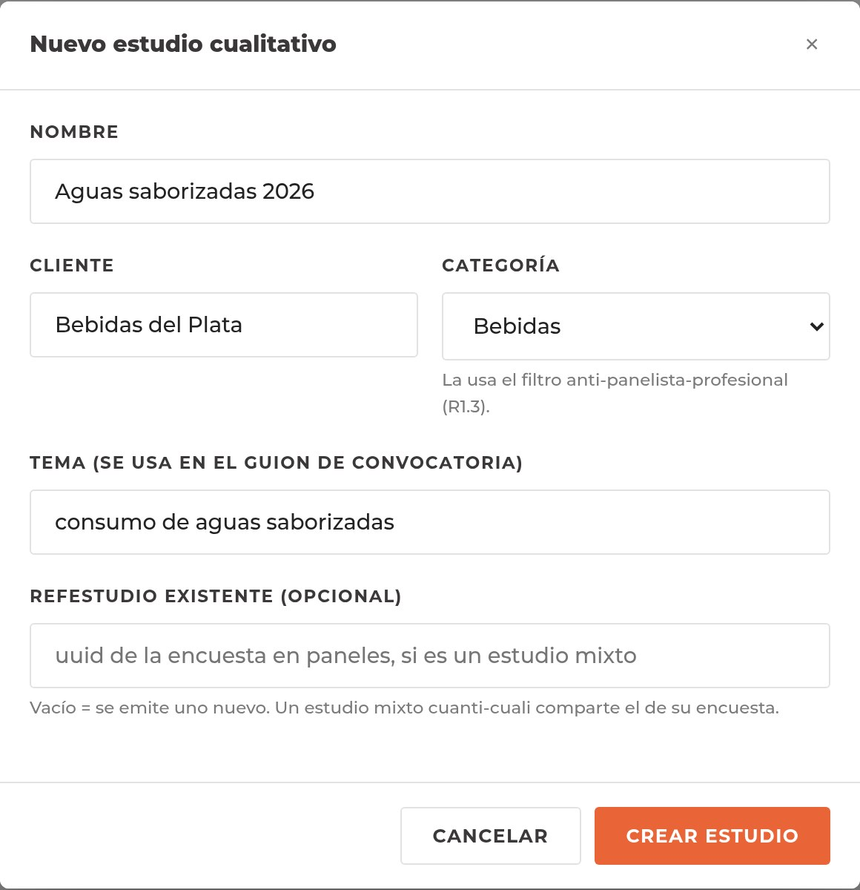
Un estudio recién creado no tiene pauta, y hasta que la tenga no se puede abrir una sesión: el botón + Nueva sesión aparece deshabilitado.
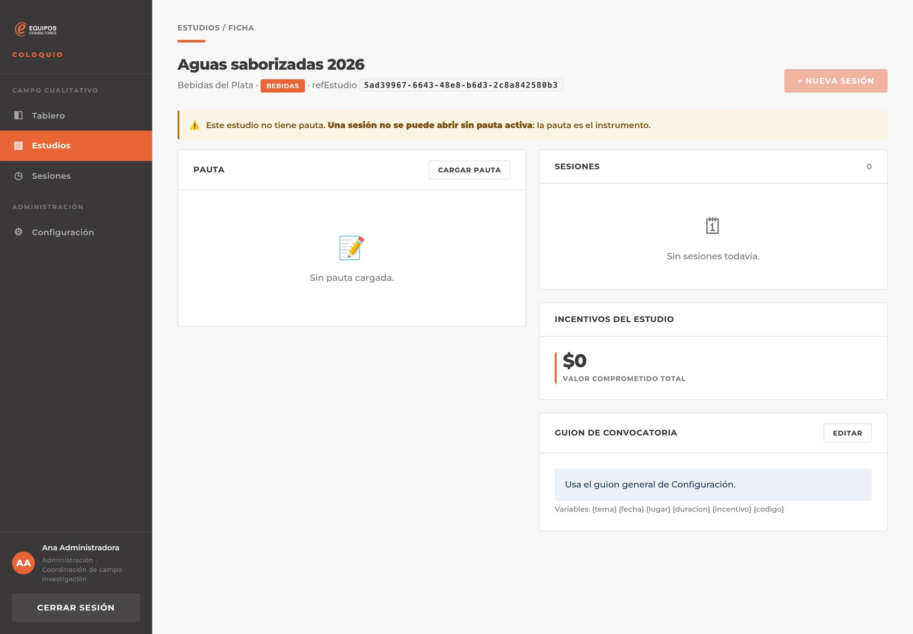
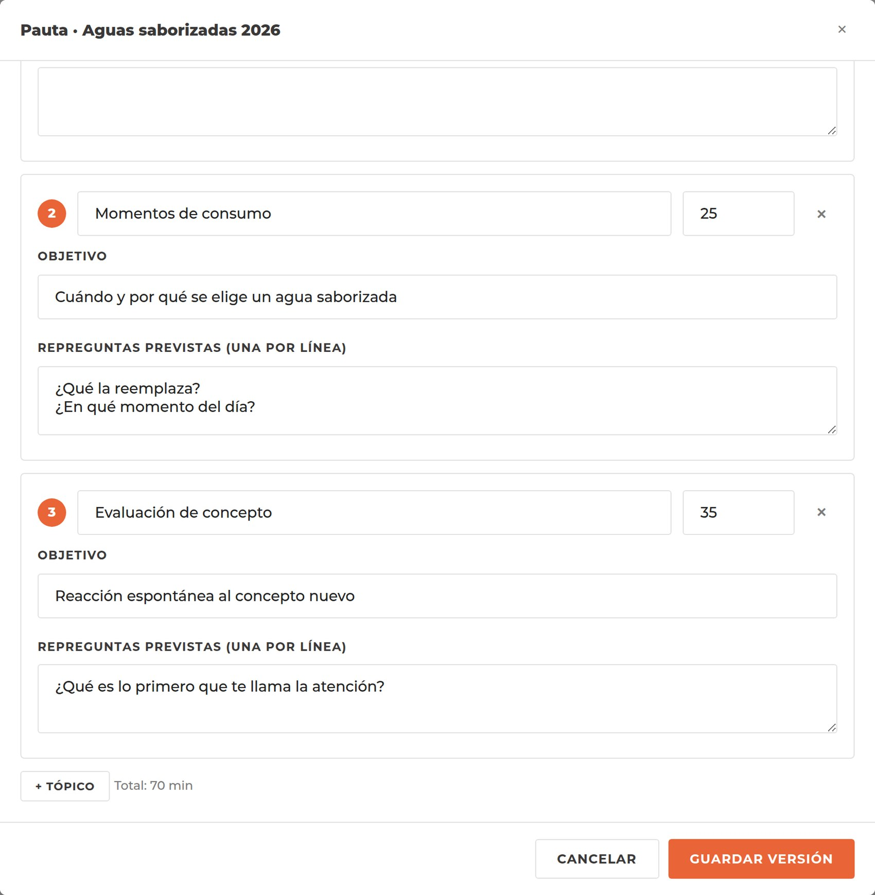
Cada vez que la guardás se crea una versión nueva y la anterior queda inactiva. Las sesiones que ya estaban abiertas siguen atadas a la versión con la que se crearon. Así, cambiar la pauta a mitad del campo no altera lo que ya se hizo.
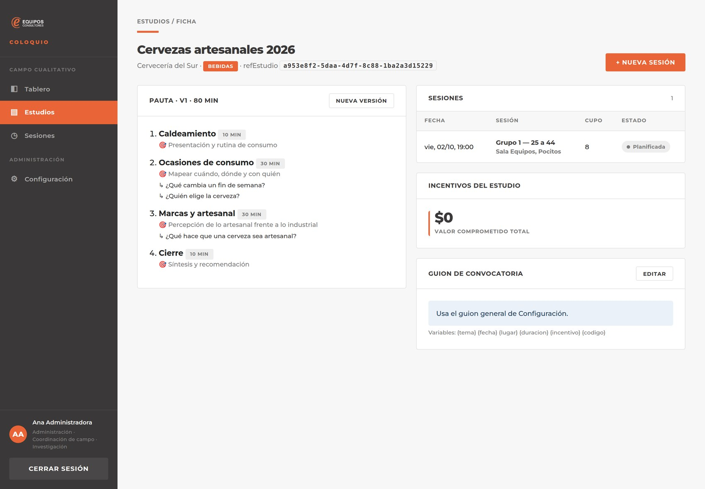
Es el texto que el sistema te sugiere para llamar o escribir. Cada estudio puede
tener el suyo. Si no, se usa el general de Configuración. Admite variables que se
completan solas: {tema}, {fecha}, {lugar},
{duracion}, {incentivo} y {codigo}. El
código es importante: es lo que la persona tiene que decir al
llegar (sección 9).
Cuántos querés sentar, de qué segmentos, y a cuántos hay que invitar para lograrlo.
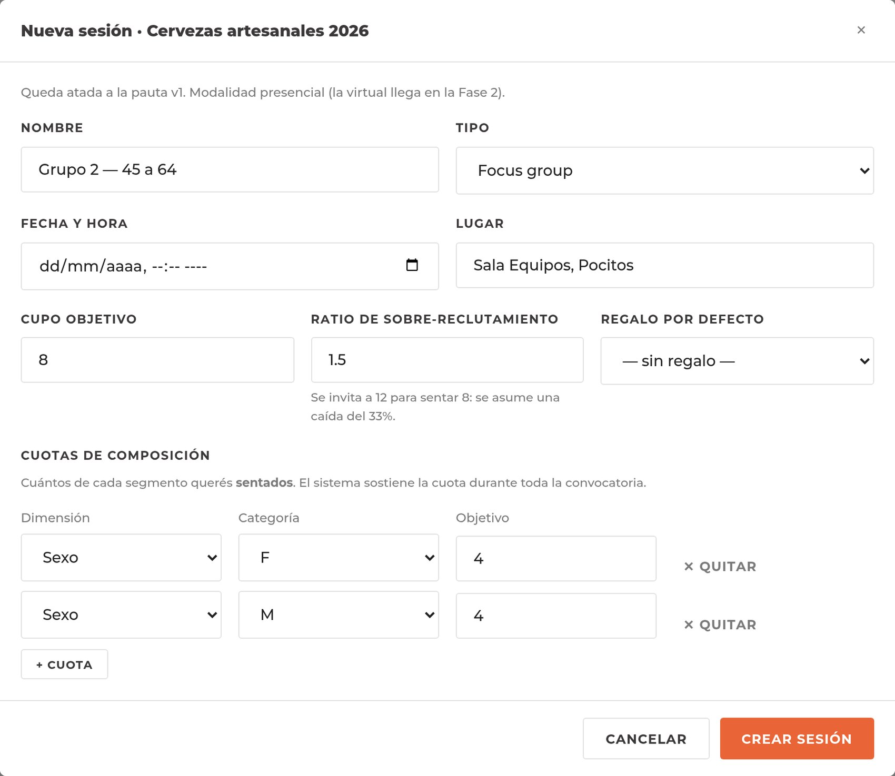
Todo esto se puede cambiar después desde la pestaña Armado, mientras la sesión esté abierta. Ahí quedan también las decisiones de cuota que se vayan tomando (sección 8) y la opción de cancelar la sesión (sección 10.4).
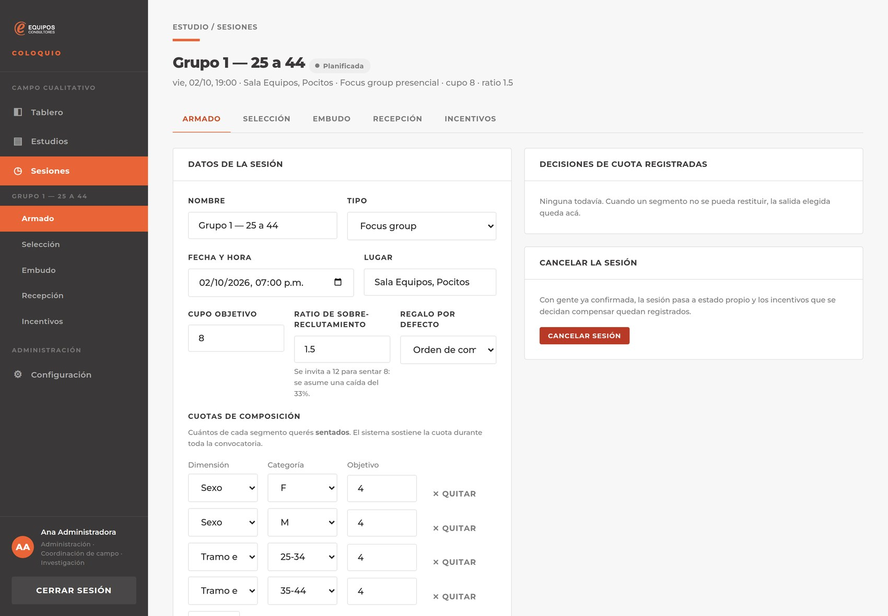
A quién llamar, y por qué: el panel decide, con el historial de cada persona a la vista.
| Demográfica | Por sexo, tramo etario, localidad y edad. Es la más rápida y no usa el motor semántico. |
| Semántica | Por lo que la gente respondió en encuestas anteriores: «toma cerveza artesanal con amigos». Usa el motor de consulta de Gestión de paneles y ordena a las personas por cuánto se parece lo que dijeron. |
| Mixta | Las dos cosas: filtra por segmento y ordena por lo que respondieron. |
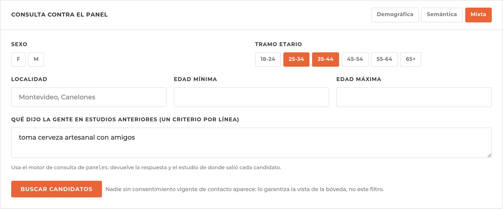
La lista sale de la bóveda, que muestra solo a quien tiene vigente el consentimiento de contacto. No es un filtro de COLOQUIO que se pueda saltear: si alguien retiró el consentimiento, directamente no está.
Cada candidato aparece con:
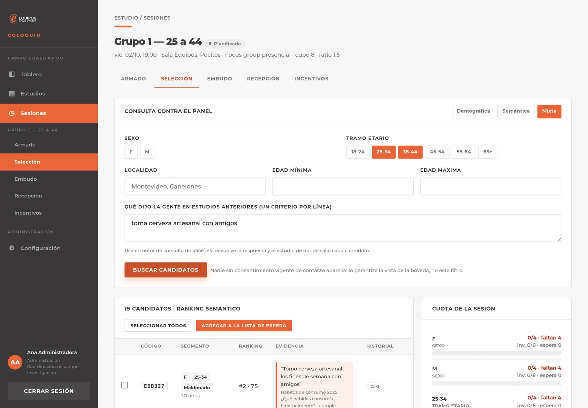
Si el motor de Gestión de paneles no responde, o si no encuentra contenido para ese segmento, la selección no se detiene: se resuelve por criterio demográfico y un cartel amarillo explica por qué. Para usar la búsqueda semántica, tu usuario tiene que tener además permiso de consulta en Gestión de paneles.
El sistema excluye solo a quien participó de una sesión de la misma categoría dentro de la ventana configurada (por ejemplo, 180 días), y a quien llegó al tope global de participaciones del año. Los excluidos se muestran aparte, con el motivo.
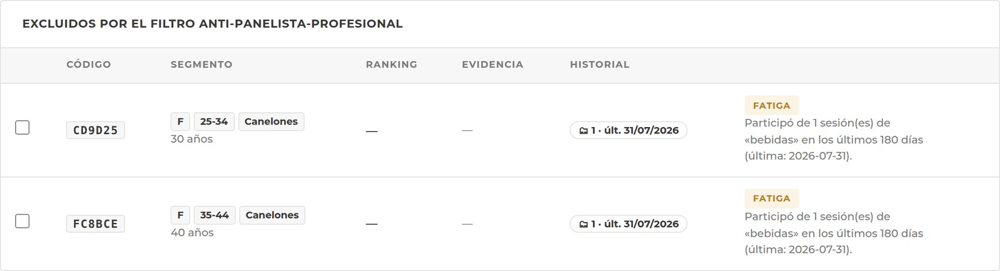
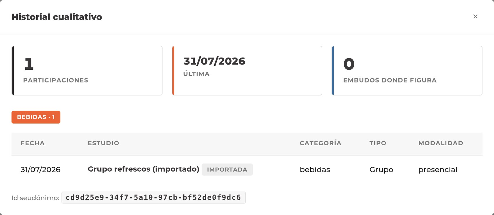
Quien ya está en otra sesión del mismo estudio aparece marcado y no se puede agregar: una persona no puede estar en dos sesiones de un mismo estudio.
A veces hay que volver a sentar a alguien, por ejemplo por un perfil muy difícil de conseguir. Se puede, pero no en silencio. Si marcás a un excluido, el sistema te pide un motivo. El motivo queda registrado en su convocatoria, con tu usuario y la hora.
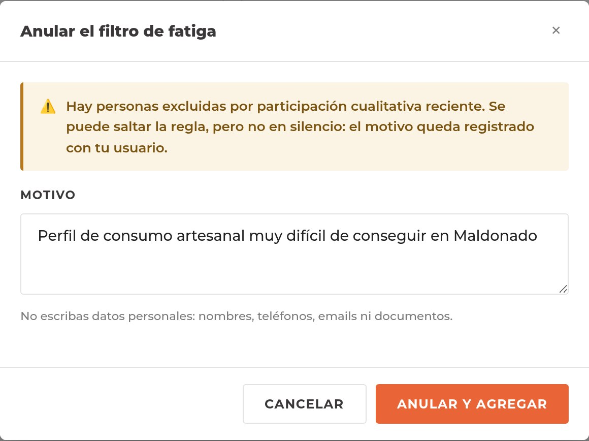
Si para algún segmento no hay candidatos suficientes para llegar a la meta de invitación, aparece un cartel rojo antes de empezar a convocar. Es el momento de ampliar el criterio, no el día de la sesión.
Cada contacto queda registrado, y al final de la sesión existen la tasa de show y el tiempo de convocatoria.
| Candidato | En la lista de espera. Nadie lo contactó todavía. |
| Invitado | Está en la lista de invitación: hay que contactarlo. |
| Contactado | Se habló con la persona. |
| Aceptó | Dijo que sí. Ya cuenta para la cuota. |
| Confirmado | Confirmó que viene. Es lo que cuenta para el cupo. |
| Asistió | Llegó a la sesión (sección 9). |
| Rechazó No contactable | Salen del embudo. Para volver hace falta reingresarlos con motivo (6.6). |
| Aceptó o confirmó, y después avisó que no viene. Hay que reemplazarlo (sección 8). |
Con la lista de espera armada, tocá Proponer lista de invitación en Selección. El sistema elige de la lista de espera a quién invitar para cumplir cada cuota asumiendo la caída. Si para algún segmento no alcanza, lo dice en vez de completar con cualquiera. Elegí el canal inicial y tocá Invitar.
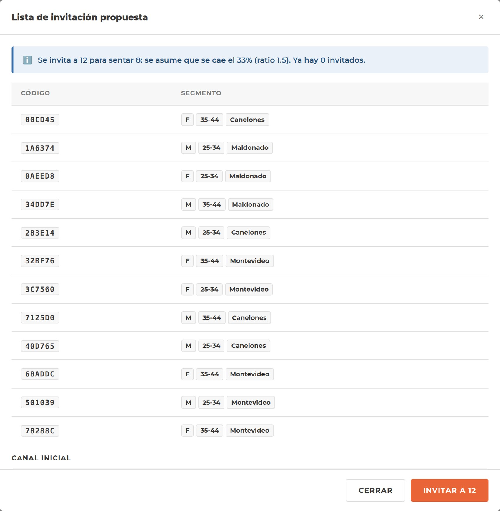
Arriba están los contadores de cada estado. A la derecha, la cuota: la barra verde es cuántos aceptaron o confirmaron contra el objetivo, y la celeste, cuántos se invitaron contra la meta. Los filtros En curso, Lista de espera, Cerrados y Todos cambian qué filas se ven.
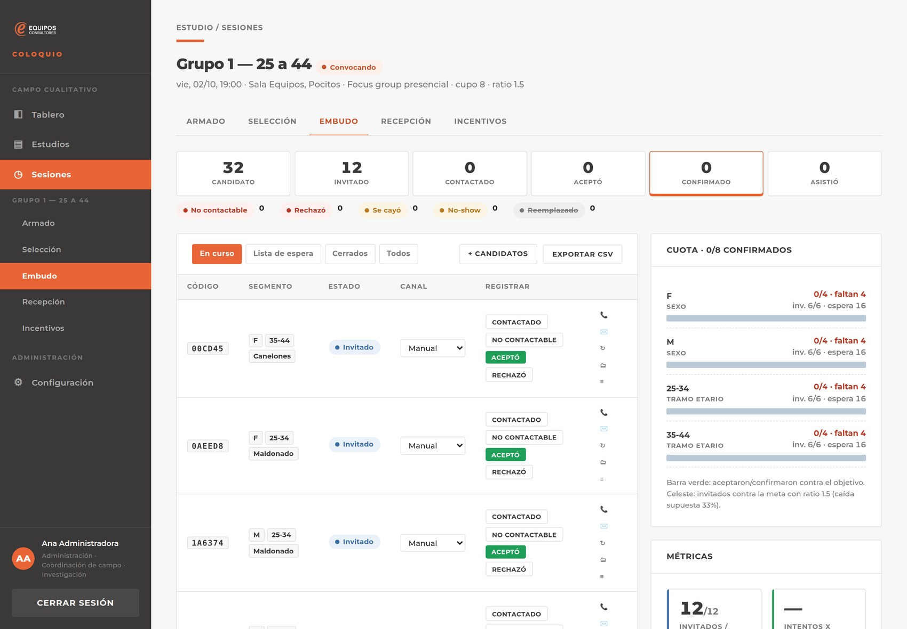
El contacto se puede ver solo de quien ya está invitado. Al invitar, COLOQUIO le avisa a la bóveda que hay una convocatoria para esa persona en esta sesión, y sin ese aviso la bóveda no entrega el teléfono. Si la persona retiró su consentimiento, la bóveda no acepta el aviso: la persona queda en la lista de espera y el sistema te lo dice.
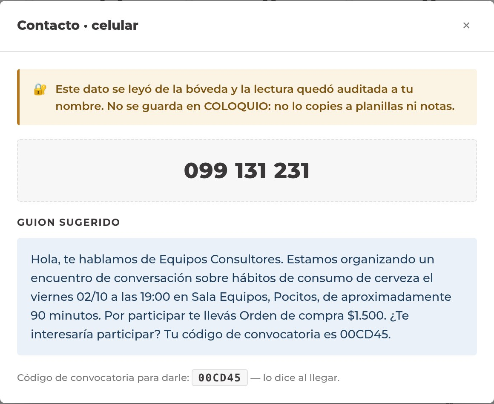
Los botones de la columna Registrar son los pasos posibles desde el estado actual. Registrar tiene que ser más rápido que la llamada: si hablaste con alguien y dijo que sí, tocá directamente Aceptó. El sistema registra también el paso intermedio («contactado»), así que no hace falta tocar dos botones.
Si alguien que había rechazado cambia de idea, tocá Reingresar en su fila. Vuelve a Invitado y el motivo queda registrado. A un Candidato que nunca fue invitado se lo puede quitar de la lista. Lo demás queda registrado y no se borra.
Cuando los confirmados llegan al cupo, aparece el cartel verde con el tiempo de convocatoria y la sesión pasa a Confirmada. Si después alguien se cae y ya no alcanza, vuelve sola a Convocando.
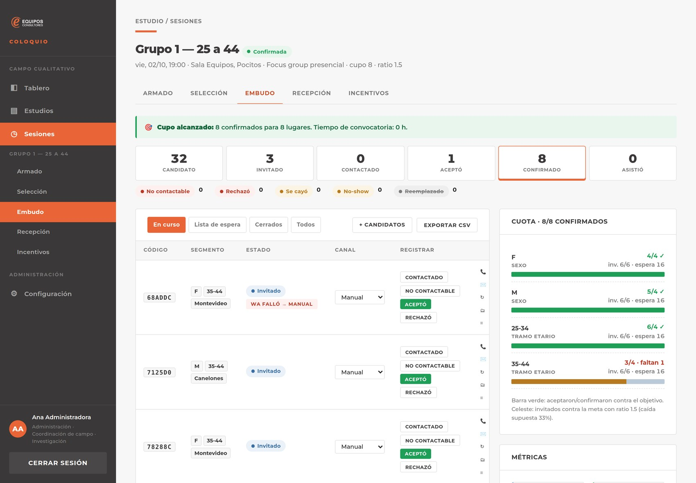
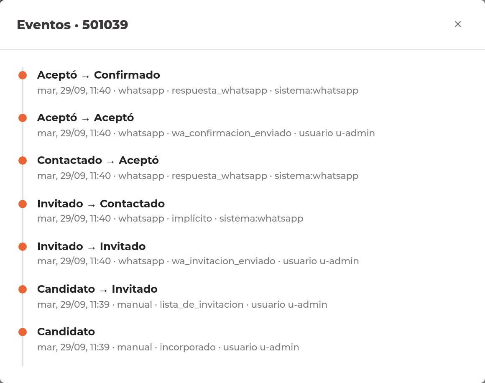
sistema:whatsapp.El canal se elige persona por persona. La respuesta de la persona mueve el embudo sola.
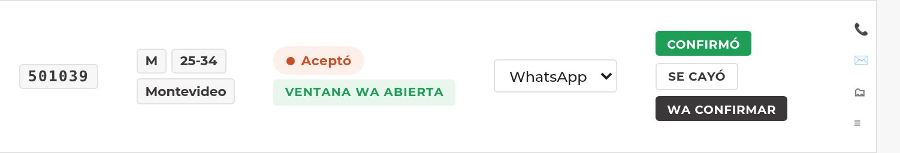
Meta cobra cada invitación. Pero cuando la persona responde, se abren 24 horas en las que los mensajes no se cobran. Por eso la invitación lleva botones: para que la persona conteste. Si mandás la confirmación o el recordatorio con la ventana abierta, salen gratis, y el sistema te lo dice.
Si Meta rechaza la plantilla, si el número no tiene WhatsApp o si el mensaje no se entrega, la convocatoria pasa a canal manual y conserva su estado. La fila muestra WA falló → manual. Si ponés el cursor encima, ves el motivo. Seguí por teléfono desde donde estaba.
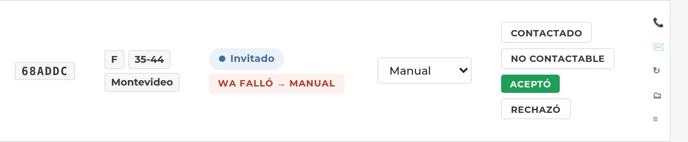
Un «sí» o un «no» escrito se interpreta igual que el botón. Cualquier otro texto no se guarda, porque puede traer datos personales. La fila muestra respondió por WA: revisar y hay que mirar el mensaje en el teléfono.
Un reemplazo del mismo segmento, o una decisión explícita si no hay.
Si alguien que había aceptado o confirmado avisa que no viene, tocá Se cayó en su fila. Aparece un aviso con el segmento que quedó sin cubrir y el botón Reemplazar.
El sistema propone candidatos que coinciden con quien se fue en todas las dimensiones que tienen cuota. Busca primero en la lista de espera y, si ahí no hay, en el panel, con el mismo filtro de fatiga. Tocá Elegir: el reemplazo queda invitado y marcado como tal, y quien se cayó pasa a Reemplazado.
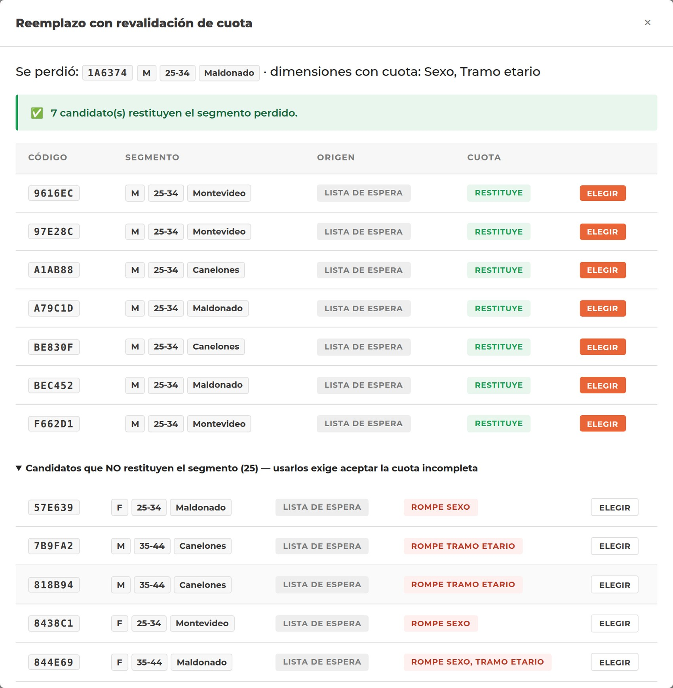
Los candidatos que no restituyen el segmento se muestran aparte, con la dimensión que rompen. Se pueden usar, pero el sistema pide que aceptes la cuota incompleta, y la decisión queda registrada.
Si nadie restituye el segmento, el sistema lo dice en vez de proponer a cualquiera, y ofrece tres salidas:
| Bajar el cupo | El cupo baja en uno, y también el objetivo de los segmentos afectados. |
| Correr la fecha | Se elige una fecha nueva para tener más tiempo de convocatoria. |
| Aceptar la cuota incompleta | La sesión sigue así, y queda registrado que se aceptó. |
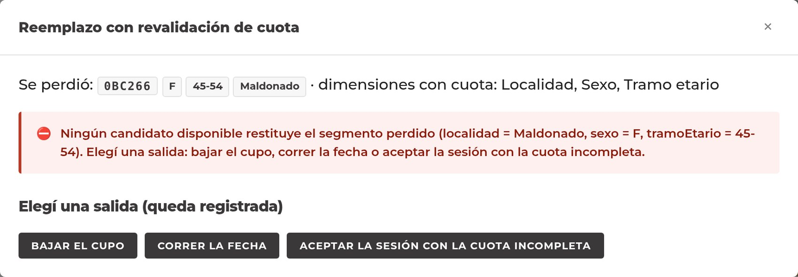
La salida elegida queda en la pestaña Armado, en Decisiones de cuota registradas, con quién la tomó y cuándo.
Si una persona que había aceptado se da de baja de Gestión de paneles, COLOQUIO la saca del embudo y borra todos sus datos (sección 13). En la sesión queda un aviso rojo Baja del panel con el segmento que se perdió y el botón Buscar reemplazo, que funciona igual que 8.1. La persona ya no aparece en ningún lado.
Pensada para usarse desde el teléfono, parado en la puerta.
Como COLOQUIO no guarda nombres, cada convocado tiene un código de seis caracteres. Se le da al invitarlo (está en el guion y en los mensajes de WhatsApp) y lo dice al llegar. Es la forma de identificarlo sin que el sistema tenga datos personales.
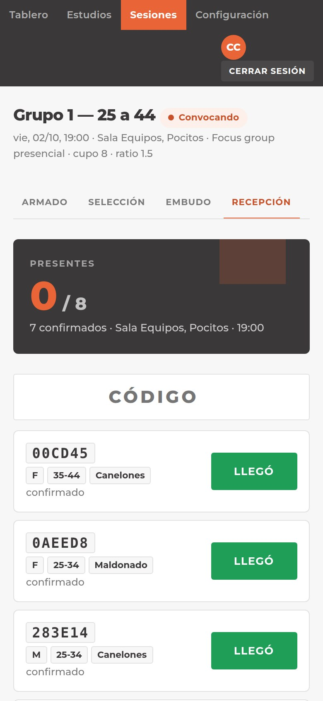
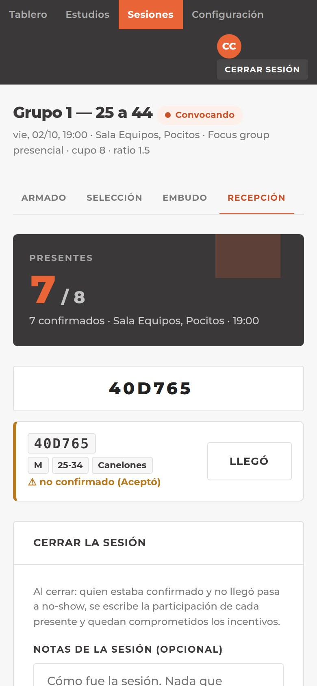
Si la persona está en el embudo pero no confirmó (por ejemplo, aceptó y nunca confirmó), aparece con un borde ámbar y el aviso no confirmado. Para dejarla entrar, el sistema pide un motivo que queda registrado. Si el código no es de esta sesión, el sistema lo dice: no dejes pasar a nadie sin verificar.
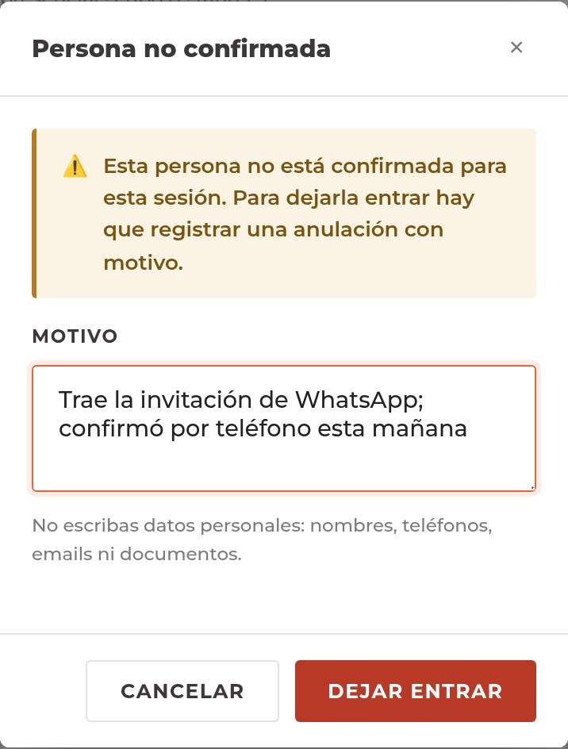
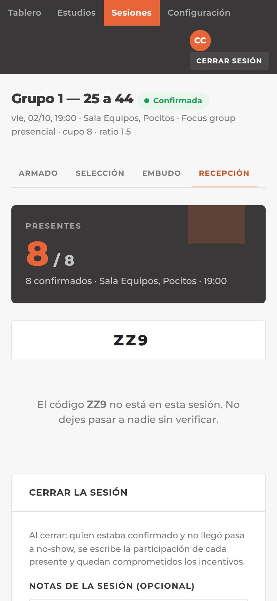
Cuando termina, al pie de Recepción escribí las notas de la sesión, si querés, y tocá Cerrar sesión. Al cerrar:
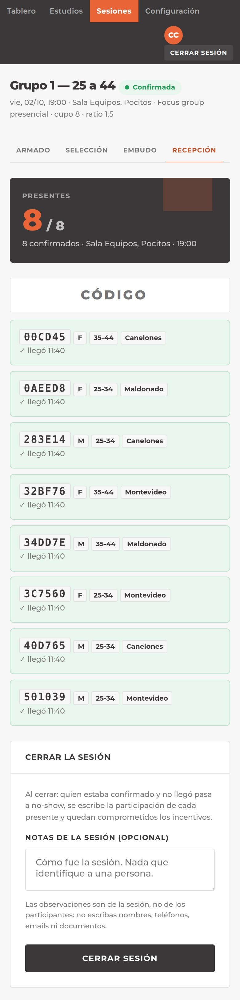
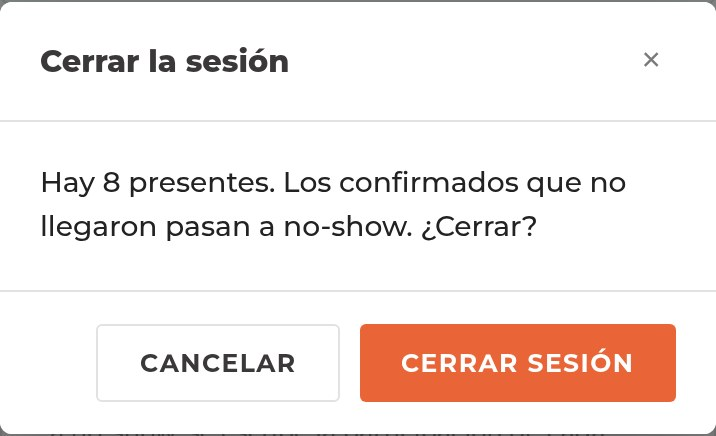
Escribí cómo fue el grupo, no quién era quién. Si una nota tiene un teléfono, un email o un documento, el sistema no la guarda.
Un regalo por sesión. No son puntos ni pasan por la gamificación de Gestión de paneles.
Cada vez que se registra una llegada, queda un compromiso de regalo con el regalo por defecto de la sesión. En la pestaña Incentivos:
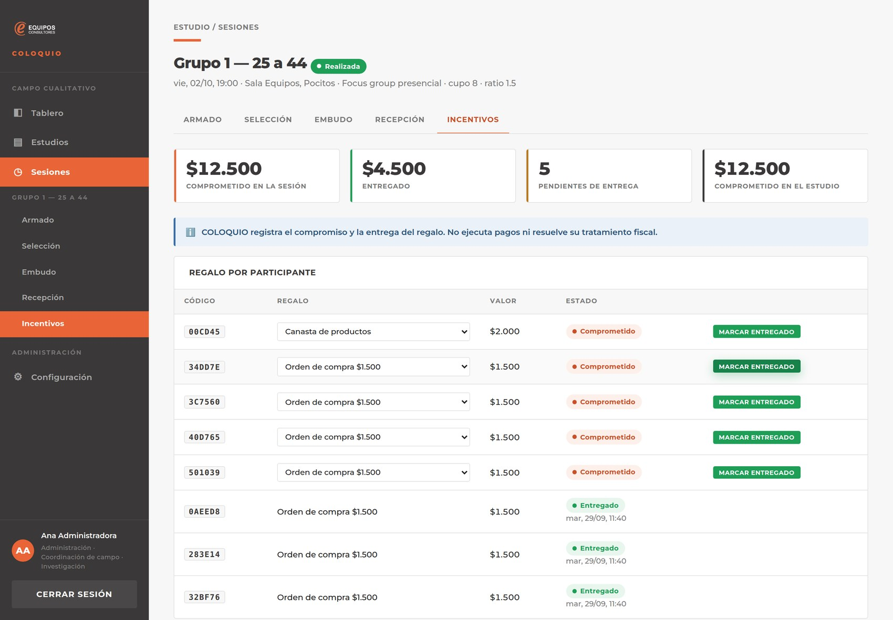
COLOQUIO registra el compromiso y la entrega. No ejecuta pagos ni resuelve el tratamiento fiscal del regalo.
El valor comprometido de todas las sesiones de un estudio se ve en su ficha y en la lista de estudios. Es lo que el investigador necesita para cotizar.
Después del cierre, el historial de cada presente muestra la sesión nueva. La próxima vez que alguien arme un grupo de la misma categoría, el filtro de fatiga lo va a excluir.
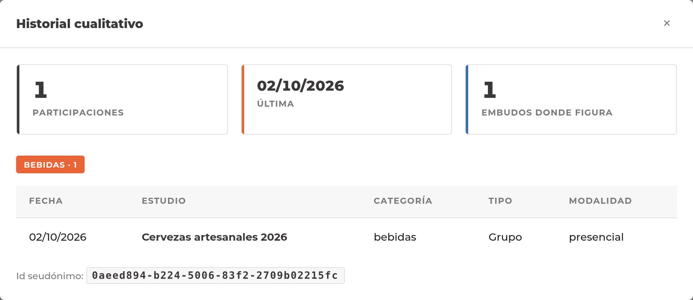
Desde Armado → Cancelar sesión. Pide el motivo y, si había gente confirmada, permite marcar a quiénes compensar con un regalo y describir cómo se resolvió. La sesión queda Cancelada y los compromisos de compensación aparecen en Incentivos.
Lo que antes no se podía medir.
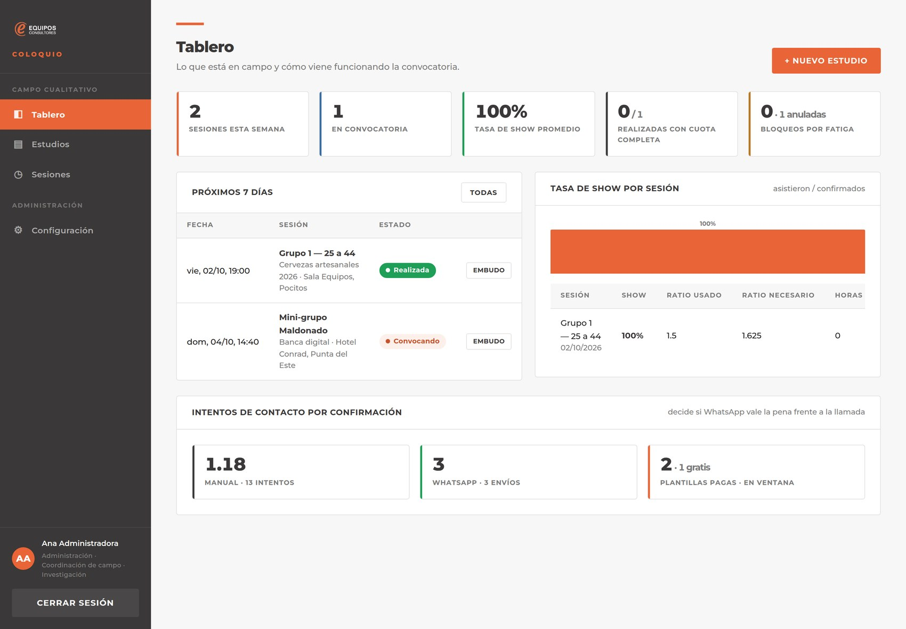
| Métrica | Qué dice |
|---|---|
| Tasa de show | Presentes sobre confirmados, por sesión y en promedio. Es la base para decidir el ratio de sobre-reclutamiento. |
| Ratio usado y ratio necesario | El ratio con que se armó la sesión, contra el que hizo falta de verdad (invitados sobre presentes). Con unos meses de datos, el ratio deja de ser una intuición. |
| Horas a cupo | Tiempo entre la primera invitación y el cupo confirmado. |
| Intentos por confirmación | Por canal. Es lo que dice si WhatsApp rinde más que la llamada. |
| Plantillas pagas y mensajes gratis | Cuántas plantillas de WhatsApp se cobraron, y cuántos mensajes salieron dentro de la ventana gratis. |
| Bloqueos por fatiga | Cuántas veces el filtro bloqueó a alguien, y cuántas se anuló. Si casi todas se anulan, el umbral está mal puesto. |
| Realizadas con cuota completa | Sesiones que cerraron con todas las cuotas cubiertas, sobre el total. |
Catálogos y umbrales. Todos se cambian desde la aplicación.
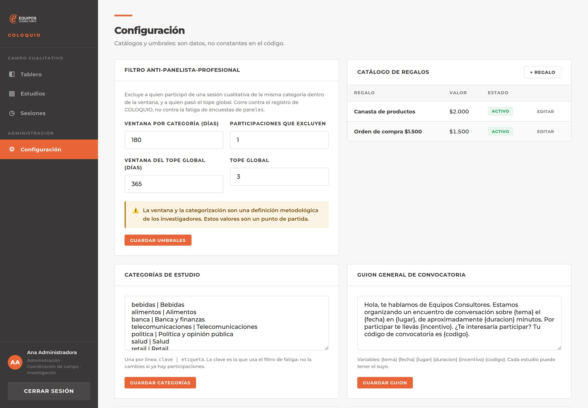
| Ventana por categoría | Cuántos días hacia atrás se miran las participaciones de la misma categoría. Por defecto, 180. |
| Participaciones que excluyen | Cuántas participaciones de la categoría dentro de la ventana dejan a alguien afuera. Por defecto, 1. |
| Ventana y tope global | Un límite de participaciones de cualquier categoría. Por defecto, 3 en 365 días. |
Qué ventana usar y cómo agrupar los estudios en categorías lo definen los investigadores. Los valores por defecto son un punto de partida.
Una por línea, con la forma clave | etiqueta. La clave es la que usa
el filtro de fatiga. No la cambies si ya hay participaciones en
esa categoría: el filtro dejaría de reconocerlas.
+ Regalo agrega uno con nombre, valor y moneda. Un regalo inactivo no se puede asignar, pero los compromisos que ya lo usan se conservan.
El texto que se sugiere al llamar cuando el estudio no tiene guion propio. Usa las mismas variables de la sección 3.3.
Los nombres de las plantillas aprobadas por Meta para invitación, recordatorio y confirmación, y el idioma. Cada plantilla lleva cinco variables (tema, fecha, lugar, incentivo y código) y dos botones de respuesta rápida. La etiqueta de arriba indica si el canal está configurado.
Al principio el filtro de fatiga no sabe nada de los grupos que Equipos ya hizo.
Para que tenga memoria desde el primer día, cargá esos grupos: la categoría, la
fecha y los id_persona de los participantes, uno por línea. Esos ids
se obtienen en Gestión de paneles. Cada participación queda en el historial como
«importada» y cuenta igual para la fatiga.
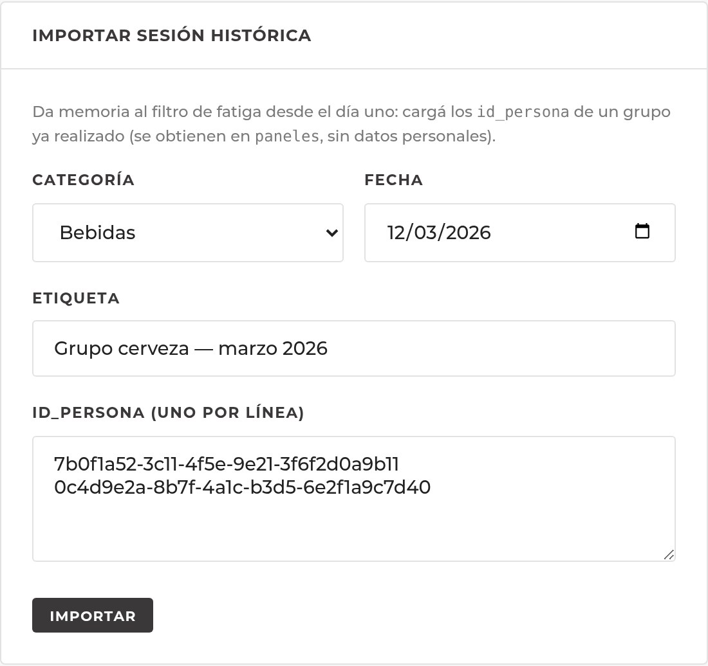
La tabla lista a todo el padrón de Equipos. Marcá los roles de cada persona y tocá Guardar. El rol de administrador de quien es admin en Gestión de paneles no se puede quitar desde acá.
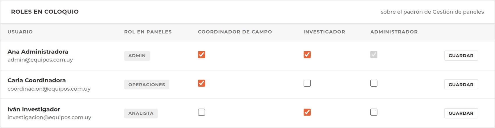
Para el administrador: la baja de una persona y la salud de los datos.
Cuando alguien ejerce su derecho de baja en Gestión de paneles, COLOQUIO recibe un pendiente. Cada 30 minutos, sin intervención de nadie, el sistema:
Si la persona estaba en un embudo activo, la sesión recibe el aviso de baja de la sección 8.3. Desde Configuración → Cumplimiento → Correr cascada de baja se puede forzar una pasada sin esperar.
El sistema lleva contadores (personas por estado, cuota cubierta, valor comprometido) y el historial de cada persona. Verificar consistencia los recalcula desde cero y muestra las diferencias. Verificar y reparar además corrige lo que esté mal. Conviene correrlo si un número del tablero no cierra con lo que se ve en el embudo.
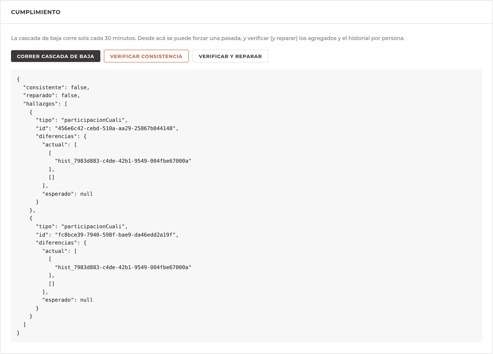
Porque COLOQUIO no guarda datos personales. Identificás a cada persona por su código y su segmento. El teléfono o el email se piden en el momento de llamar (6.4).
La bóveda rechazó la lectura. Casi siempre es porque la persona retiró su consentimiento después de ser invitada, y no hay forma de saltearlo desde COLOQUIO. Si la convocatoria había vencido (por ejemplo, porque la sesión se corrió de fecha), COLOQUIO la renueva solo y vuelve a pedir el contacto: si igual aparece el mensaje, es el consentimiento. Si pasa con muchas personas a la vez, avisale al administrador.
La bóveda no aceptó su convocatoria porque ya no tienen consentimiento vigente de contacto. El sistema lo avisa al invitar, y esas personas no se pueden convocar.
No. Al guardar la fecha nueva, COLOQUIO le actualiza a la bóveda la convocatoria de todos los que siguen en curso. Si la bóveda no responde en ese momento, lo avisa, y se corrige solo la próxima vez que pidas un contacto.
Puede ser que no tenga consentimiento de contacto vigente (no aparece nunca), que esté excluido por fatiga (está en la tabla de excluidos) o que ya esté en otra sesión del mismo estudio (aparece marcado).
El motor de Gestión de paneles no respondió, tu usuario no tiene permiso de consulta ahí, o no hay contenido para ese segmento. El cartel dice cuál de las tres. La selección demográfica sigue sirviendo para convocar.
Sí. Cualquier persona de la lista de espera se puede invitar desde el embudo (filtro Lista de espera → Invitar).
Los estados no se deshacen: el embudo es un registro. Si alguien quedó en «rechazó» por error, reingresalo con un motivo (6.6).
Anotá los códigos y registralos cuando vuelva la conexión: mientras la sesión no esté cerrada, se pueden cargar. La hora que queda es la de la carga, no la de la llegada.
Porque tienen algo con forma de teléfono, email o documento. Reescribilas sin ese dato.
| Anulación | Saltar una regla (el filtro de fatiga, o dejar entrar a alguien no confirmado) con un motivo que queda registrado. |
| Bóveda | La base de datos de personas de Gestión de paneles. Tiene los datos personales y los consentimientos. |
| Cascada de baja | El borrado, en COLOQUIO, de todo lo de una persona que se dio de baja del panel. |
| Código de convocatoria | Seis caracteres que identifican a un convocado sin datos personales. Lo dice al llegar. |
| Cuota | Cuántas personas de un segmento querés sentadas: por ejemplo, 4 mujeres. |
| Cupo | Cuántas personas querés sentadas en total. |
| Embudo | El recorrido de cada convocatoria por sus estados, de candidato a asistió. |
| Evidencia | La respuesta de una encuesta anterior que hizo que el motor semántico eligiera a alguien. |
| Fatiga cualitativa | Haber participado de sesiones cualitativas recientes. En exceso, excluye. |
id_persona | Identificador opaco de una persona, común a todos los sistemas de Equipos. |
| Lista de espera | Los candidatos incorporados a una sesión que todavía no fueron invitados. |
| Pauta | El instrumento de la sesión: tópicos ordenados con objetivo, minutos y repreguntas. |
| Ratio de sobre-reclutamiento | Cuántos invitar por cada lugar. Con 1,5 se invita a 12 para sentar 8. |
refEstudio | Identificador del estudio, compartido con Gestión de paneles en los estudios mixtos. |
| Restituir el segmento | Reemplazar a alguien por otra persona que coincide con ella en todas las dimensiones con cuota. |
| Segmento | Sexo, tramo etario y localidad de una persona. |
| Tasa de show | Presentes sobre confirmados. |
| Ventana de servicio | Las 24 horas después de que alguien responde por WhatsApp, en las que los mensajes no se cobran. |